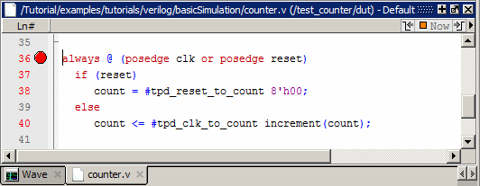
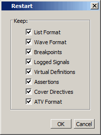
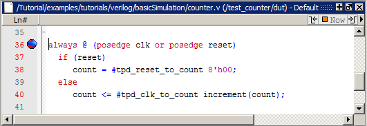
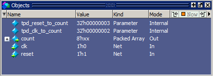
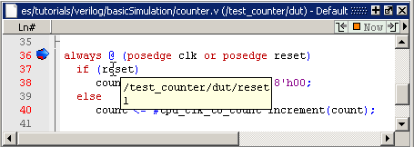
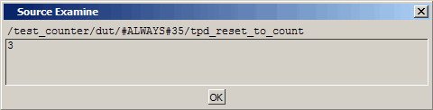

Set Breakpoints and Step through the Source
Procedure
- Open counter.v
in the Source window.
- Select to open the Files window.
- Click the + sign next to the sim filename to see the contents of vsim.wlf dataset.
- Double-click counter.v (or counter.vhd if you are simulating the VHDL files) to open the file in the Source window.
- Set a
breakpoint on line 36 of counter.v (or, line
39 of counter.vhd for VHDL).
- Scroll
to line 36 and click in the Ln# (line number) column next to the
line number.
A red dot appears in the line number column at line number 36 (Figure 1), indicating that a breakpoint has been set.
Figure 1. Setting Breakpoint in Source Window
- Scroll
to line 36 and click in the Ln# (line number) column next to the
line number.
- Disable,
enable, and delete the breakpoint.
- Click the red dot to disable the breakpoint. It will become a gray dot.
- Click the gray dot again to re-enable the breakpoint. It will become a red dot.
- Click the red dot with your right mouse button and select Remove Breakpoint 36.
- Click in the line number column next to line number 36 again to re-create the breakpoint.
- Restart
the simulation.
- Click
the Restart icon to reload the design elements and reset the simulation
time to zero.
The Restart dialog box that appears gives you options on what to retain during the restart (Figure 2).
Figure 2. Setting Restart Functions - Click the OK button in the Restart dialog box.
- Click
the Run -All icon.

The simulation runs until the breakpoint is hit. When the simulation hits the breakpoint, it stops running, highlights the line with a blue arrow in the Source view (Figure 3), and issues a Break message in the Transcript window.
Figure 3. Blue Arrow Indicates Where Simulation Stopped.When a breakpoint is reached, typically you want to know one or more signal values. You have several options for checking values:
Look at the values shown in the Objects window (Figure 4).
Figure 4. Values Shown in Objects WindowSet your mouse pointer over a variable in the Source window and a yellow box will appear with the variable name and the value of that variable at the time of the selected cursor in the Wave window (Figure 5).
Figure 5. Hover Mouse Over Variable to Show ValueHighlight a signal, parameter, or variable in the Source window, right-click it, and select Examine from the pop-up menu to display the variable and its current value in a Source Examine window (Figure 6).
Figure 6. Parameter Name and Value in Source Examine Windowuse the examine command at the VSIM> prompt to output a variable value to the Transcript window (that is, examine count)
- Click
the Restart icon to reload the design elements and reset the simulation
time to zero.
- Try out
the step commands.
- Click
the Step Into icon on the Step toolbar.

This single-steps the debugger.
Experiment on your own. Set and clear breakpoints and use the Step, Step Over, and Continue Run commands until you feel comfortable with their operation.
- Click
the Step Into icon on the Step toolbar.